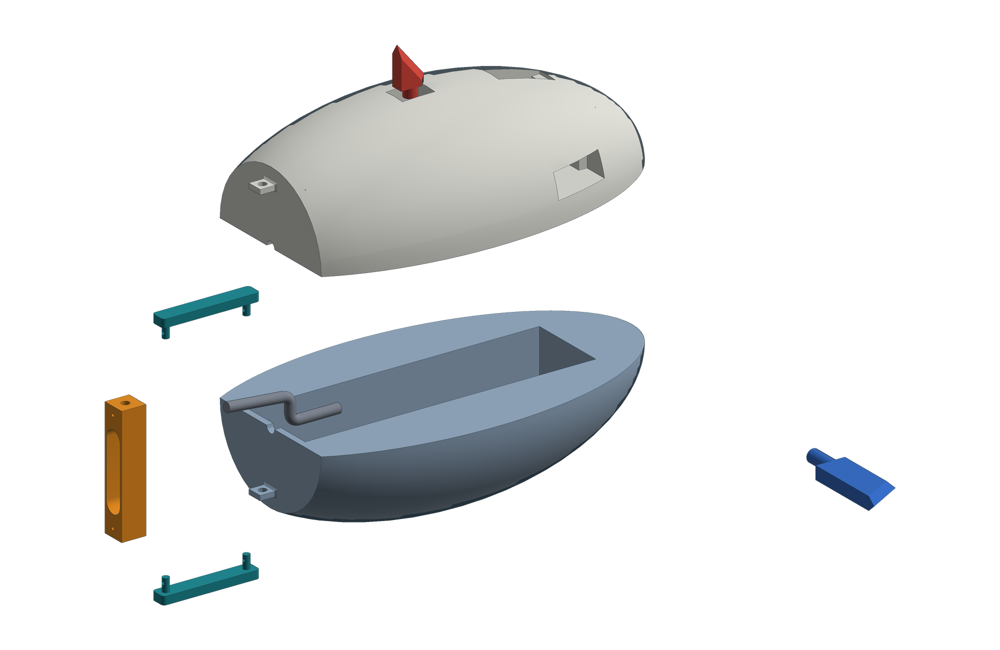
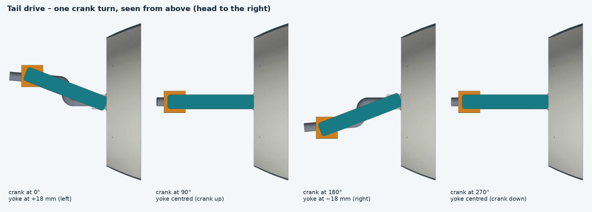
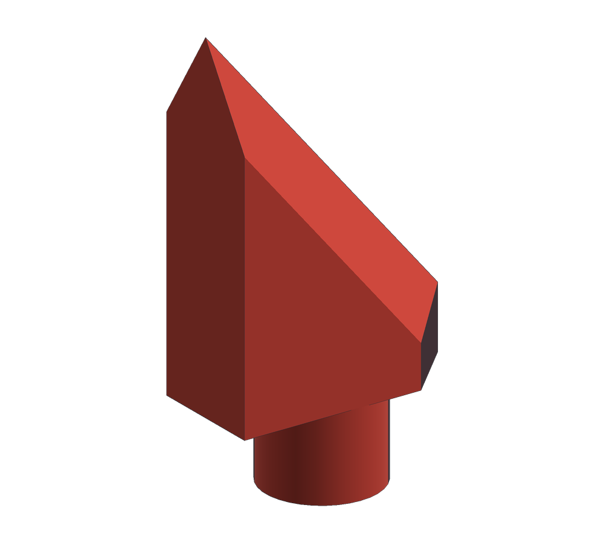
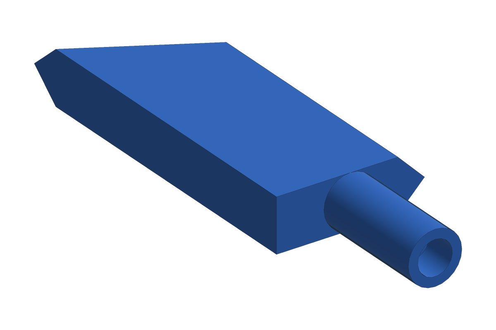
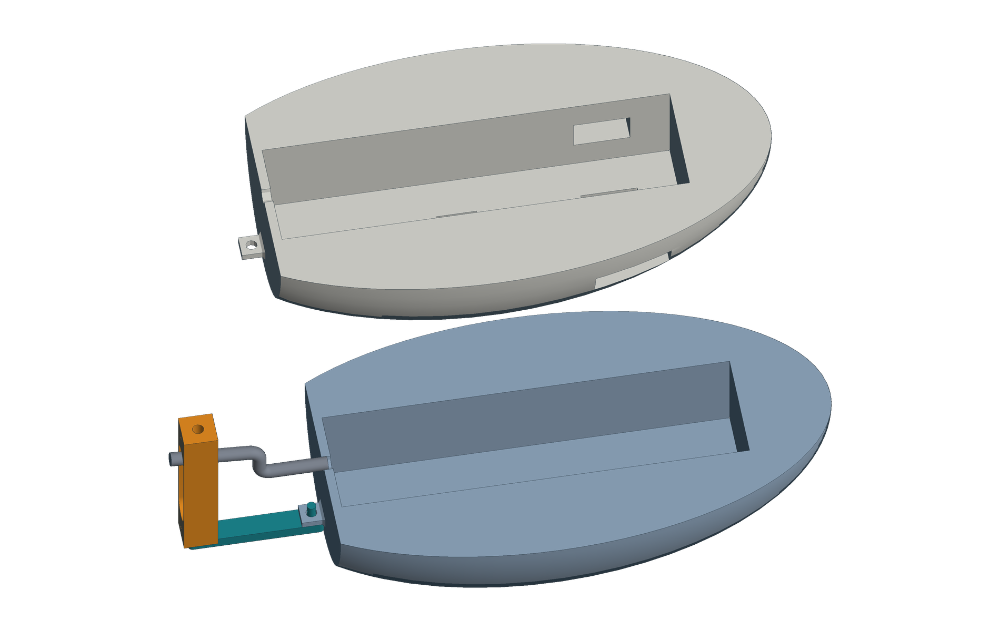
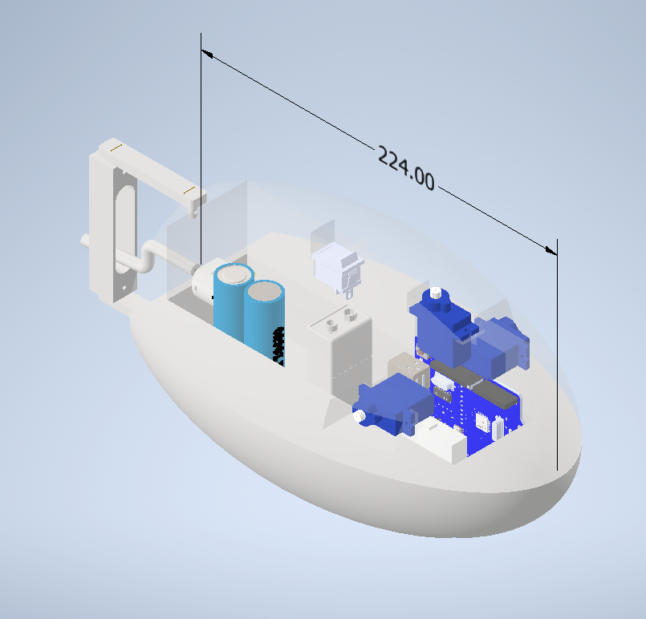
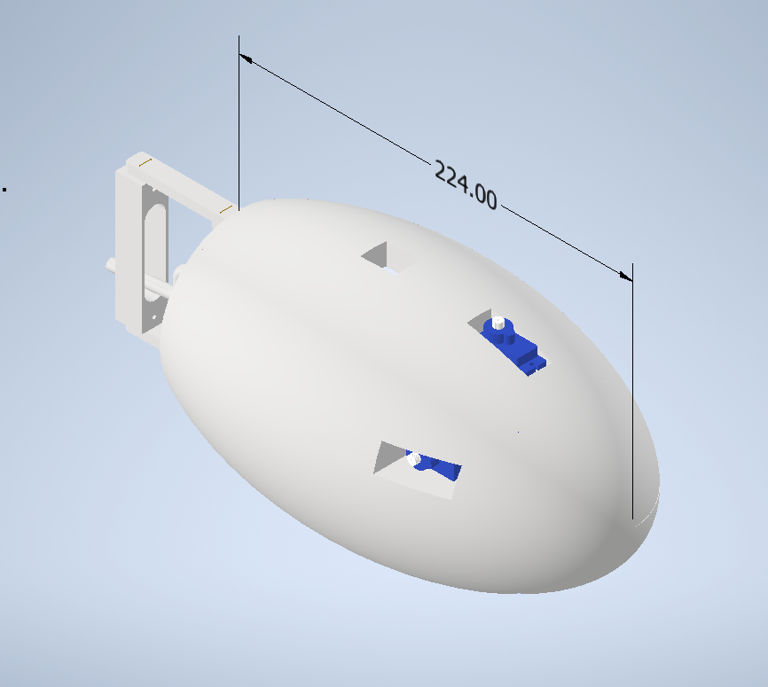
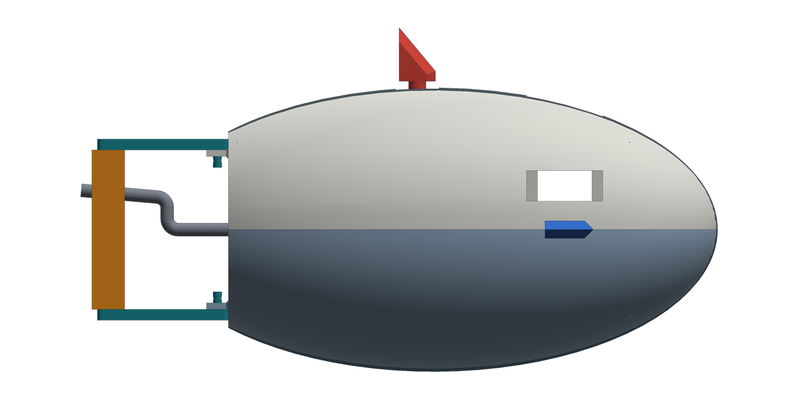
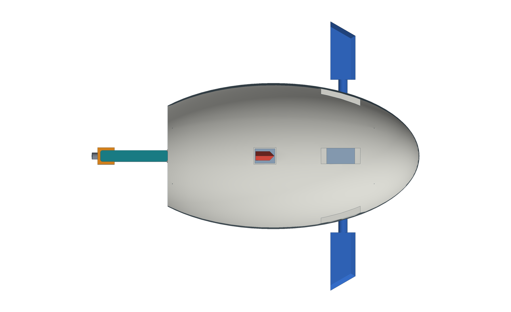
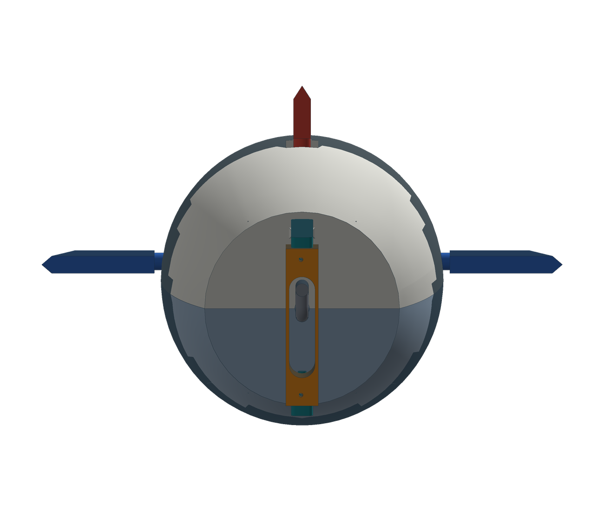

Three jobs, three mechanisms. The tail pushes the fish forward, the rudder turns it, and the side fins tilt it up or down.

A DC motor sits at the back of the body. Its shaft drives a bent crank rod: the first part of the rod turns on the motor's axis, and the part after the bend is offset by 18 mm, so it travels round a 36 mm circle. That offset part runs through the slot in the slotted yoke.
The slot is 47 mm long and only lets the rod slide up and down. When the rod moves sideways, it carries the yoke with it. Two link bars hold the yoke behind the body. Each bar has a pin at both ends: one goes into a tab on the body, the other into the end of the yoke. The bars swing about the body tabs, so the yoke sweeps from side to side on a short arc instead of falling away.

The motor is switched by a relay, so the tail either runs at full speed or stops. The beat rate is set by the motor speed: one crank turn gives one full left-right beat.


The rudder stands on top of the body on its own servo. It turns 45° to the left or right and returns to centre when the button is released. With the tail running, this turns the fish.
The two side fins sit on servos at the sides of the body. They tilt together, 35° up or down from level, to point the fish up or down. The code sends the two servos opposite angles (1790 µs and 1210 µs), which is what two mirrored servos need to move both fins the same way.
The body is an egg-shaped shell, 130 mm across and 224 mm long, cut flat at the tail end. It is printed as two halves that meet on a flat face along the middle. Each half has a long pocket for the electronics: the Arduino UNO, relay, switch, two cells, motor and the three servos. Windows in the top half let the servo shafts reach the rudder and fins. A small tab on each half holds the pins of the link bars, and a notch where the halves meet lets the crank rod out.



| Part | Qty | Size | What it does | File |
|---|---|---|---|---|
| Body, top half | 1 | 234 × 130 × 65 mm | Upper shell with servo windows and a tail tab | STL |
| Body, bottom half | 1 | 234 × 130 × 65 mm | Lower shell with the electronics pocket and a tail tab | STL |
| Crank rod | 1 | 6 mm rod, 18 mm throw, 70 mm long | Turns with the motor and drives the yoke | STL |
| Slotted yoke | 1 | 73 × 15 × 15 mm, slot 47 × 12 mm | Turns the crank's circle into a side-to-side swing | STL |
| Link bar | 2 | 60 mm long, 4 mm pins 50 mm apart | Hangs the yoke from the body tabs | STL |
| Rudder | 1 | 8 mm shaft, 30 mm tall | Steers left and right | STL |
| Side fin | 2 | 8 mm shaft, 70 mm long, 22 mm wide | Tilts the fish up and down | STL |
The motor, cells, Arduino UNO, relay, switch and servos are bought parts. They appear in the Inventor screenshots above but not in the printed parts list.


